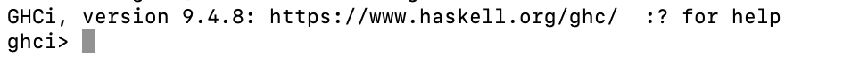
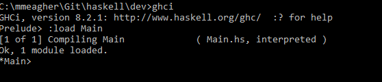

Lab-01
Labs and Exercises
Getting Started with GHCi
Installing and using GHCi
Objectives
On completion of this lab you should:
-
have GHC complier and interpreter installed on your laptop.
-
be able to use the GHCi interpreter to test simple examples.
-
be able to run simple Haskell scripts using the GHCI interface.
-
have chosen and used a source code editor.
Installing GHC (Glasgow Haskell Compiler)
- I am assuming that you are installing GHC on your own laptop.
Downloading and installing GHC
-
GHC inludes a compiler and an interpreter (GHCi).
-
There is a good description of how to set up the environment here
-
Use GHCup - it makes the installation straightforward.
-
Install the package. The installation will depend on your OS. Follow instructions as per your OS and we can deal with any issues in the lab. You don’t need to install Stack yet.
-
When you have sucessfully installed GHC, run the interactive environment (GHCi) by simply typing ghci at terminal prompt:

You should be seeing version 9.4.8 or higher.
Running simple Haskell programs
- We can execute small simple programs using GHCi (i for interactive) alone.
- To practice this, firstly run the GHCi interpreter (as per previous page). A prompt is displayed >
- Use GHCi to evaluate the following:
Exercise 1
2+3
Exercise 2
2*3
Exercise 3
div is the infix integer division operator (note the quotes character - backward quote)
7 `div` 2
Exercise 4
Select the first element of a non-empty list:
head [1,2,3,4,5]
Exercise 5
Remove the first elemenet of a non-empty list:
tail [1,2,3,4,5]
Exercise 6
Select the first n elements of a list:
take 3 [1,2,3,4,5]
Exercise 7
Remove the first n elements of a list:
drop 3 [1,2,3,4,5]
Exercise 8
Select the nth element of a list (from index 0):
[1,2,3,4,5] !! 3
Exercise 9
Calculate the length of a list:
length [1,2,3,4,5]
Exercise 10
Calculate the sum of a list:
sum [1,2,3,4,5]
Exercise 11
Calculate the product of a list:
product [1,2,3,4,5]
Exercise 12
Append two lists:
[1,2,3,4,5] ++ [4,6,7,8]
Exercise 13
Calculate the reverse of a list:
reverse [1,2,3,4,5]
Exercise 14
Prepend an element to a list:
1: [2,3,4,5]
Using GHC
- To load compiled code.
- Using the terminal, cd to your working directory. (this just makes the loading simpler)
- Create a simple Haskell script:
main = print (fac 20)
fac 0 = 1
fac n = n * fac (n-1)
Call it, e.g. ‘Main.hs’
-
load the script (Main.hs)
 -
This compiles it as well as loading it. You can now call the fac function:
-

-
You can also call the main function:

-
If you make any changes to the script, you need to reload it (thus recompiling it) :

There are a number of important and useful commands:
-
Quit GHCi: :q
-
Load a file into GHCi (autocompletion also applies to files): :l FILENAME
-
Re-load the file which is currently loaded into GHCi: :r -List the type signatures of all functions in the currently loaded file: :browse
-
Print the type of a given expression: :t EXPRESSION
-
A list of GHCi commands is available <a href=“https://downloads.haskell.org/~ghc/7.4.1/docs/html/users_guide/ghci-commands.html” target=“_blank”>here</a>
-
When you need to use a terminal command, just use :!
Source Code Editors
It is your choice as to the editor you use. Some suggestions are
-
Visual Studio Code (recommended)
-
Atom (for Macs)
-
Sublime Text
Having installed a working version of GHC, it is helpful to install a source code editor early in the semester.
Visual Studio Code
It is recommended to use VS Code with the Haskell plugin and a terminal from within VS Code to run the Haskell script opened in the VS Code editor. This is the least cumbersone approach.
-
You should ensure that a Haskell extension is installed as an Extension. (This should happen automatically)
-
A linter (<a href=“https://en.wikipedia.org/wiki/Lint_(software)” target=“_blank”>what’s a linter?</a>).It’s not necessary, especially at the beginning but will be very useful later on.
-
Note that the vsCode extension (I suggest hlint or haskell-linter) is essentially a wrapper for the hlint program(<a href=“https://hackage.haskell.org/package/hlint” target=“_blank”>here</a>). This may be a little tricky to set up but is worth the effort.